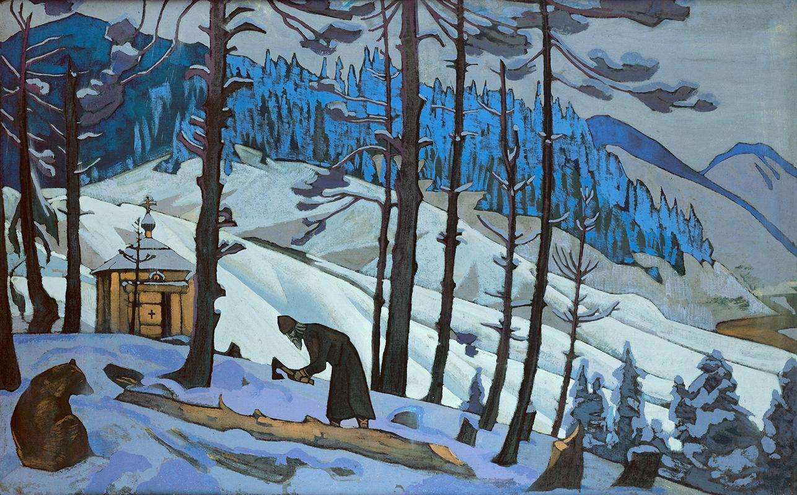

Book 6, Chapter 2 Notes
- Life of Zosima, composed by Alexei
(a) Of the Older Borther Markel
Markel non-believer who converts before death:
"each of us is guilty in everything before everyone" (289).
- (b) Zosima about Holy Scripture
his first encounter with the Book of Job who is tested by God on Satan's demand
a young priest reads the story to eight year old Zosima.
other favorite hagiographic stories (Job, Joseph, Abraham, Esther, Jonah, etc.),
Zosima tells the young man the story of St. Sergius and the Bear (295)

artist Nikolai Rerich. St. Sergius the Builder (1925)
- (c) The Duel
Officer Zinovy refuses to kill at the duel
"I've become a sort of holy fool" (301).
- (d) The Mysterious Visitor
Zosima repeats the Epigraph from John
“It is a fearful thing to fall into the hands of the living God.” (309)
the Epistle to the Hebrews 10:31 in the New Testament.
the verse expresses awe before God’s living and active power — His justice, holiness, and the inevitability of divine judgment.
When Zosima cites it, it carries both fear and reverence:
the idea that standing before the living God is overwhelming, because
He sees into every heart and repays truthfully —
yet it also implies trust and surrender to God’s will.
"I threw myself on my knees before the icon and wept for him to the most holy Mother of God" (310)
"It was the first time he called me "friend" (310)
In Russian: "В первый раз мне ты сказал."
"I came to kill you" (312).
The mysterious visitor's name was Mikhail (312).